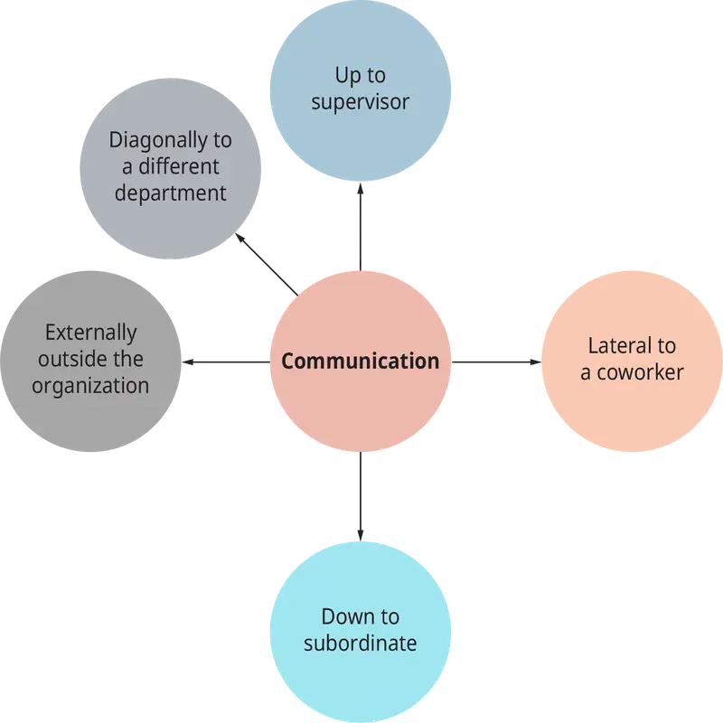
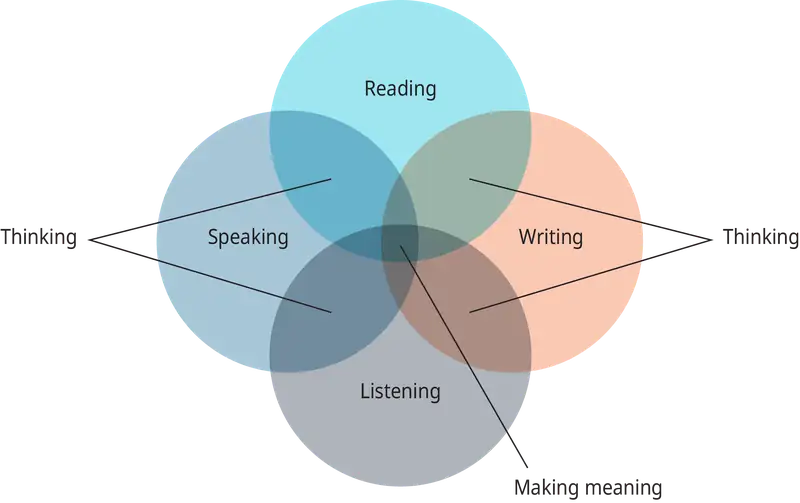

Chapter 16: Managerial Communication¶
Introduction¶
Learning Outcomes
After reading this chapter, you should be able to answer these questions:
- Understand and describe the communication process.
- Know the types of communications that occur in organizations.
- Understand how power, status, purpose, and interpersonal skills affect communications in organizations.
- Describe how corporate reputations are defined by how an organization communicates to all of its stakeholders.
- Know why talking, listening, reading, and writing are vital to managing effectively.
Exploring Managerial Careers: John Legere, T-Mobile
The chief executive officer is often the face of the company. They are often the North Star of the company, providing guidance and direction for the entire organization. With other stakeholders, such as shareholders, suppliers, regulatory agencies, and customers, CEOs often take more reserved and structured approaches. One CEO who definitely stands out is John Legere, the CEO of T-Mobile. The unconventional CEO of the self-proclaimed “un-carrier” hosts a Sunday morning podcast called “Slow Cooker Sunday” on Facebook Live, and where most CEOs appear on television interviews in standard business attire, Legere appears with shoulder-length hair dressed in a magenta T-shirt, black jacket, and pink sneakers. Whereas most CEOs use well-scripted language to address business issues and competitors, Legere refers to T-Mobile’s largest competitors, AT&T and Verizon, as “dumb and dumber.”
In the mobile phone market, T-Mobile is the number-three player competing with giants AT&T and Verizon and recently came to an agreement to merge with Sprint. Of all the consolidation sweeping through the media and telecommunications arena, T-Mobile and Sprint are the most direct of competitors. Their merger would reduce the number of national wireless carriers from four to three, a move the Federal Communications Commission has firmly opposed in the past. Then again, the wireless market looks a bit different now, as does the administration in power.
John Legere and other CEOs such as Mark Cuban, Elon Musk, and Richard Branson have a more public profile than executives at other companies that keep a lower profile and are more guarded in their public comments, often restricting their public statements to quarterly investor and analyst meetings. It is likely that the personality and communication style that the executives reveal in public is also the way that they relate to their employees. The outgoing personality of someone such as John Legere will motivate some employees, but he might be seen as too much of a cheerleader by other employees.
Sometimes the unscripted comments and colorful language that Legere uses can cause issues with employees and the public. For instance, some T-Mobile employees in their call center admonished Legere for comments at a press event where he said Verizon and AT&T were “raping” customers for every penny they have. Legere’s comments caused lengthy discussions in online forums such as Reddit about his choice of words. Legere is known for speaking his mind in public and often uses profanity, but many thought this comment crossed the line. While frank, open communication is often appreciated and leads to a clarity of message, senders of communication, be it in a public forum, an internal memo, or even a text message, should always think through the consequences of their words.
Sources: Tara Lachapelle, “T-Mobile’s Argument for Sprint Deal is as Loud as CEO John Legere’s Style,” The Seattle Times, July 9, 2018, https://www.seattletimes.com/business/t-mobiles-argument-for-sprint-deal-is-as-loud-as-ceo-john-legeres-style/; Janko Roettgers, “T-Mobile CEO John Legere Pokes Fun at Verizon’s Go90 Closure,” Variety, June 29, 2018, https://variety.com/2018/digital/news/john-legere-go90-1202862397/; Rachel Lerman, “T-Mobile’s Loud, Outspoken John Legere is Not Your Typical CEO,” The Chicago Tribune, April 30, 2018, www.chicagotribune.com/business/sns-tns-bc-tmobile-legere-20180430-story.html; Steve Kovach, T-Mobile Employees Speak Out and Call CEO’s Recent Rape Comments “Violent” and “Traumatizing”,” Business Insider, June 27, 2014, https://www.businessinsider.com/t-mobile-employees-speak-out-legere-rape-comment-2014-6; Brian X. Chen, One on One: John Legere, the Hip New Chief of T-Mobile USA,” New York Times, January 9, 2013, https://bits.blogs.nytimes.com/2013/01/09/one-on-one-john-legere-the-hip-new-chief-of-t-mobile-usa/.
We will distinguish between communication between two individuals and communication amongst several individuals (groups) and communication outside the organization. We will show that managers spend a majority of their time in communication with others. We will examine the reasons for communication and discuss the basic model of interpersonal communication, the types of interpersonal communication, and major influences on the communication process. We will also discuss how organizational reputation is defined by communication with stakeholders.
16.1 The Process of Managerial Communication¶
- Understand and describe the communication process.
Interpersonal communication is an important part of being an effective manager:
- It influences the opinions, attitude, motivation, and behaviors of others.
- It expresses our feelings, emotions, and intentions to others.
- It is the vehicle for providing, receiving, and exchanging information regarding events or issues that concern us.
- It reinforces the formal structure of the organization by such means as making use of formal channels of communication.
Interpersonal communication allows employees at all levels of an organization to interact with others, to secure desired results, to request or extend assistance, and to make use of and reinforce the formal design of the organization. These purposes serve not only the individuals involved, but the larger goal of improving the quality of organizational effectiveness.
The model that we present here is an oversimplification of what really happens in communication, but this model will be useful in creating a diagram to be used to discuss the topic. Figure 16.2 illustrates a simple communication episode where a communicator encodes a message and a receiver decodes the message.
Encoding and Decoding¶
Two important aspects of this model are encoding and decoding. Encoding is the process by which individuals initiating the communication translate their ideas into a systematic set of symbols (language), either written or spoken. Encoding is influenced by the sender’s previous experiences with the topic or issue, her emotional state at the time of the message, the importance of the message, and the people involved. Decoding is the process by which the recipient of the message interprets it. The receiver attaches meaning to the message and tries to uncover its underlying intent. Decoding is also influenced by the receiver’s previous experiences and frame of reference at the time of receiving the message.
Feedback¶
Several types of feedback can occur after a message is sent from the communicator to the receiver. Feedback can be viewed as the last step in completing a communication episode and may take several forms, such as a verbal response, a nod of the head, a response asking for more information, or no response at all. As with the initial message, the response also involves encoding, medium, and decoding.
There are three basic types of feedback that occur in communication. These are informational, corrective, and reinforcing. In informational feedback, the receiver provides nonevaluative information to the communicator. An example is the level of inventory at the end of the month. In corrective feedback, the receiver responds by challenging the original message. The receiver might respond that it is not their responsibility to monitor inventory. In reinforcing feedback, the receiver communicated that they have clearly received the message and its intentions. For instance, the grade that you receive on a term paper (either positive or negative) is reinforcing feedback on your term paper (your original communication).
Noise¶
There is, however, a variety of ways that the intended message can get distorted. Factors that distort message clarity are noise. Noise can occur at any point along the model shown in Figure 16.2, including the decoding process. For example, a manager might be under pressure and issue a directive, “I want this job completed today, and I don’t care what it costs,” when the manager does care what it costs.
Concept Check
Describe the communication process.
Why is feedback a critical part of the communication process?
What are some things that managers can do to reduce noise in communication?
16.2 Types of Communications in Organizations¶
- Know the types of communications that occur in organizations.
In the communication model described above, three types of communication can be used by either the communicator in the initial transmission phase or the receiver in the feedback phase. These three types are discussed next.
Oral Communication¶
This consists of all messages or exchanges of information that are spoken, and it’s the most prevalent type of communication.
Written Communication¶
This includes e-mail, texts, letters, reports, manuals, and annotations on sticky notes. Although managers prefer oral communication for its efficiency and immediacy, the increase in electronic communication is undeniable. As well, some managers prefer written communication for important messages, such as a change in a company policy, where precision of language and documentation of the message are important.
Managerial Leadership: Dealing with Information Overload
One of the challenges in many organizations is dealing with a deluge of emails, texts, voicemails, and other communication. Organizations have become flatter, outsourced many functions, and layered technology to speed communication with an integrated communication programs such as Slack, which allows users to manage all their communication and access shared resources in one place. This can lead to information overload, and crucial messages may be drowned out by the volume in your inbox.
Add the practice of “reply to all,” which can add to the volume of communication, that many coworkers use, and that means that you may get five or six versions of an initial e-mail and need to understand all of the responses as well as the initial communication before responding or deciding that the issue is resolved and no response is needed. Here are suggestions to dealing with e-mail overload upward, horizontally, and downward within your organization and externally to stakeholders and customers.
One way to reduce the volume and the time you spend on e-mail is to turn off the spigot of incoming messages. There are obvious practices that help, such as unsubscribing to e-newsletters or turning off notifications from social media accounts such as Facebook and Twitter. Also consider whether your colleagues or direct reports are copying you on too many emails as an FYI. If yes, explain that you only need to be updated at certain times or when a final decision is made.
You will also want to set up a system that will organize your inbox into “folders” that will allow you to manage the flow of messages into groups that will allow you to address them appropriately. Your system might look something like this:
- Inbox: Treat this as a holding pen. E-mails shouldn’t stay here any longer than it takes for you to file them into another folder. The exception is when you respond immediately and are waiting for an immediate response.
- Today: This is for items that need a response today.
- This week: This is for messages that require a response before the end of the week.
- This month/quarter: This is for everything that needs a longer-term response. Depending on your role, you may need a monthly or quarterly folder.
- FYI: This is for any items that are for information only and that you may want to refer back to in the future.
This system prioritizes e-mails based on timescales rather than the e-mails’ senders, enabling you to better schedule work and set deadlines.
Another thing to consider is your outgoing e-mail. If your outgoing messages are not specific, too long, unclear, or are copied too widely, your colleagues are likely to follow the same practice when communicating with you. Keep your communication clear and to the point, and managing your outbox will help make your inbound e-mails manageable.
Critical Thinking Questions
How are you managing your e-mails now? Are you mixing personal and school and work-related e-mails in the same account?
How would you communicate to a colleague that is sending too many FYI e-mails, sending too may unclear e-mails, or copying too many people on her messages?
Sources: Amy Gallo, Stop Email Overload, Harvard Business Review, February 21, 2012, https://hbr.org/2012/02/stop-email-overload-1; Barry Chingel, “How to beat email Overload in 2018”, CIPHER, January 16, 2018, https://www.ciphr.com/advice/email-overload/; Monica Seely, “At the Mercy of Your Inbox? How to Cope With Email Overload”, The Guardian, November 6, 2017, https://www.theguardian.com/small-business-network/2017/nov/06/at-the-mercy-of-your-inbox-how-to-cope-with-email-overload.
Nonverbal Communication¶
There is also the transformation of information without speaking or writing. Some examples of this are things such as traffic lights and sirens as well as things such as office size and placement, which connote something or someone of importance. As well, things such as body language and facial expression can convey either conscious or unconscious messages to others.
Major Influences on Interpersonal Communication¶
Regardless of the type of communication involved, the nature, direction, and quality of interpersonal communication processes can be influenced by several factors.
Social Influences¶
Communication is a social process, as it takes at least two people to have a communication episode. There is a variety of social influences that can affect the accuracy of the intended message. For examples, status barriers between employees at different levels of the organization can influence things such as addressing a colleague as at a director level as “Ms. Jones” or a coworker at the same level as “Mike.” Prevailing norms and roles can dictate who speaks to whom and how someone responds. Figure 16.4 illustrates a variety of communications that illustrate social influences in the workplace.

Perception¶
In addition, the communication process is heavily influenced by perceptual processes. The extent to which an employee accurately receives job instructions from a manager may be influenced by her perception of the manager, especially if the job instructions conflict with her interest in the job or if they are controversial. If an employee has stereotyped the manager as incompetent, chances are that little that the manager says will be taken seriously. If the boss is well regarded or seen as influential in the company, everything that they say may be interpreted as important.
Interaction Involvement¶
Communication effectiveness can be influenced by the extent to which one or both parties are involved in conversation. This attentiveness is called interaction attentiveness or interaction involvement. If the intended receiver of the message is preoccupied with other issues, the effectiveness of the message may be diminished. Interaction involvement consists of three interrelated dimensions: responsiveness, perceptiveness, and attentiveness.
Organizational Design¶
The communication process can also be influenced by the design of the organization. It has often been argued to decentralize an organization because that will lead to a more participative structure and lead to improved communication in the organization. When messages must travel through multiple levels of an organization, the possibility of distortion can also occur, which would be diminished with more face-to-face communication.
Concept Check
What are the three major types of communication?
How can you manage the inflow of electronic communication?
What are the major influences on organizational communication, and how can organizational design affect communication?
16.3 Factors Affecting Communications and the Roles of Managers¶
- Understand how power, status, purpose, and interpersonal skills affect communications in organizations.
The Roles Managers Play¶
In Mintzberg’s seminal study of managers and their jobs, he found the majority of them clustered around three core management roles.
Interpersonal Roles¶
Managers are required to interact with a substantial number of people during a workweek. They host receptions; take clients and customers to dinner; meet with business prospects and partners; conduct hiring and performance interviews; and form alliances, friendships, and personal relationships with many others. Numerous studies have shown that such relationships are the richest source of information for managers because of their immediate and personal nature.
Three of a manager’s roles arise directly from formal authority and involve basic interpersonal relationships. First is the figurehead role. As the head of an organizational unit, every manager must perform some ceremonial duties. In Mintzberg’s study, chief executives spent 12% of their contact time on ceremonial duties; 17% of their incoming mail dealt with acknowledgments and requests related to their status. One example is a company president who requested free merchandise for a handicapped schoolchild.
Managers are also responsible for the work of the people in their unit, and their actions in this regard are directly related to their role as a leader. The influence of managers is most clearly seen, according to Mintzberg, in the leader role. Formal authority vests them with great potential power. Leadership determines, in large part, how much power they will realize.
Does the leader’s role matter? Ask the employees of Chrysler Corporation (now Fiat Chrysler). When Sergio Marchionne, who passed away in 2018, took over the company in the wake of the financial crisis, the once-great auto manufacturer was in bankruptcy, teetering on the verge of extinction. He formed new relationships with the United Auto Workers, reorganized the senior management of the company, and—perhaps, most importantly—convinced the U.S. federal government to guarantee a series of bank loans that would make the company solvent again. The loan guarantees, the union response, and the reaction of the marketplace, especially for the Jeep brand, were due in large measure to Marchionne’s leadership style and personal charisma. More recent examples include the return of Starbucks founder Howard Schultz to reenergize and steer his company and Amazon CEO Jeff Bezos and his ability to innovate during a downturn in the economy.
Popular management literature has had little to say about the liaison role until recently. This role, in which managers establish and maintain contacts outside the vertical chain of command, becomes especially important in view of the finding of virtually every study of managerial work that managers spend as much time with peers and other people outside of their units as they do with their own subordinates. Surprisingly, they spend little time with their own superiors. In Rosemary Stewart’s (1967) study, 160 British middle and top managers spent 47% of their time with peers, 41% of their time with people inside their unit, and only 12% of their time with superiors. Guest’s (1956) study of U.S. manufacturing supervisors revealed similar findings.
Informational Roles¶
Managers are required to gather, collate, analyze, store, and disseminate many kinds of information. In doing so, they become information resource centers, often storing huge amounts of information in their own heads, moving quickly from the role of gatherer to the role of disseminator in minutes. Although many business organizations install large, expensive management information systems to perform many of those functions, nothing can match the speed and intuitive power of a well-trained manager’s brain for information processing. Not surprisingly, most managers prefer it that way.
As monitors, managers are constantly scanning the environment for information, talking with liaison contacts and subordinates, and receiving unsolicited information, much of it because of their network of personal contacts. A good portion of this information arrives in verbal form, often as gossip, hearsay, and speculation.
In the disseminator role, managers pass privileged information directly to subordinates, who might otherwise have no access to it. Managers must decide not only who should receive such information, but how much of it, how often, and in what form. Increasingly, managers are being asked to decide whether subordinates, peers, customers, business partners, and others should have direct access to information 24 hours a day without having to contact the manager directly.
In the spokesperson role, managers send information to people outside of their organizations: an executive makes a speech to lobby for an organizational cause, or a supervisor suggests a product modification to a supplier. Increasingly, managers are also being asked to deal with representatives of the news media, providing both factual and opinion-based responses that will be printed or broadcast to vast unseen audiences, often directly or with little editing. The risks in such circumstances are enormous, but so too are the potential rewards in terms of brand recognition, public image, and organizational visibility.
Decisional Roles¶
Ultimately, managers are charged with the responsibility of making decisions on behalf of both the organization and the stakeholders with an interest in it. Such decisions are often made under circumstances of high ambiguity and with inadequate information. Often, the other two managerial roles—interpersonal and informational—will assist a manager in making difficult decisions in which outcomes are not clear and interests are often conflicting.
In the role of entrepreneur, managers seek to improve their businesses, adapt to changing market conditions, and react to opportunities as they present themselves. Managers who take a longer-term view of their responsibilities are among the first to realize that they will need to reinvent themselves, their product and service lines, their marketing strategies, and their ways of doing business as older methods become obsolete and competitors gain advantage.
While the entrepreneur role describes managers who initiate change, the disturbance or crisis handler role depicts managers who must involuntarily react to conditions. Crises can arise because bad managers let circumstances deteriorate or spin out of control, but just as often good managers find themselves in the midst of a crisis that they could not have anticipated but must react to just the same.
The third decisional role of resource allocator involves managers making decisions about who gets what, how much, when, and why. Resources, including funding, equipment, human labor, office or production space, and even the boss’s time, are all limited, and demand inevitably outstrips supply. Managers must make sensible decisions about such matters while still retaining, motivating, and developing the best of their employees.
The final decisional role is that of negotiator. Managers spend considerable amounts of time in negotiations: over budget allocations, labor and collective bargaining agreements, and other formal dispute resolutions. During a week, managers will often make dozens of decisions that are the result of brief but important negotiations between and among employees, customers and clients, suppliers, and others with whom managers must deal.
Concept Check
What are the major roles that managers play in communicating with employees?
Why are negotiations often brought in to communications by managers?
16.4 Managerial Communication and Corporate Reputation¶
- Describe how corporate reputations are defined by how an organization communicates to its stakeholders.
Management communication is a central discipline in the study of communication and corporate reputation. An understanding of language and its inherent powers, combined with the skill to speak, write, listen, and form interpersonal relationships, will determine whether companies succeed or fail and whether they are rewarded or penalized for their reputations.
At the midpoint of the twentieth century, Peter Drucker wrote, “Managers have to learn to know language, to understand what words are and what they mean. Perhaps most important, they have to acquire respect for language as [our] most precious gift and heritage. The manager must understand the meaning of the old definition of rhetoric as ‘the art which draws men’s hearts to the love of true knowledge.’”
Later, Eccles and Nohria reframed Drucker’s view to offer a perspective of management that few others have seen: “To see management in its proper light, managers need first to take language seriously.” In particular, they argue, a coherent view of management must focus on three issues: the use of rhetoric to achieve a manager’s goals, the shaping of a managerial identity, and taking action to achieve the goals of the organizations that employ us. Above all, they say, “the essence of what management is all about [is] the effective use of language to get things done.” One of the things managers get done is the creation, management, and monitoring of corporate reputation.
The job of becoming a competent, effective manager thus becomes one of understanding language and action. It also involves finding ways to shape how others see and think of you in your role as a manager. Many noted researchers have examined the important relationship between communication and action within large and complex organizations and conclude that the two are inseparable. Without the right words, used in the right way, it is unlikely that the right reputations develop. “Words do matter,” write Eccles and Nohria. “They matter very much. Without words we have no way of expressing strategic concepts, structural forms, or designs for performance measurement systems.” Language, they conclude, “is too important to managers to be taken for granted or, even worse, abused.”
So, if language is a manager’s key to corporate reputation management, the next question is obvious: How good are managers at using language? Managers’ ability to act—to hire a talented workforce, to change an organization’s reputation, to launch a new product line—depends entirely on how effectively they use management communication, both as a speaker and as a listener. Managers’ effectiveness as a speaker and writer will determine how well they are able to manage the firm’s reputation. And their effectiveness as listeners will determine how well they understand and respond to others and can change the organization in response to their feedback.
We will now examine the role management communication plays in corporate reputation formation, management, and change and the position occupied by rhetoric in the life of business organizations. Though, this chapter will focus on the skills, abilities, and competencies for using language, attempting to influence others, and responding to the requirements of peers, superiors, stakeholders, and the organization in which managers and employees work.
Management communication is about the movement of information and the skills that facilitate it—speaking, writing, listening, and processes of critical thinking. It’s also about understanding who your organization is (identity), who others think your organization is (reputation), and the contributions individuals can make to the success of their business considering their organization’s existing reputation. It is also about confidence—the knowledge that one can speak and write well, listen with great skill as others speak, and both seek out and provide the feedback essential to creating, managing, or changing their organization’s reputation.
At the heart of this chapter, though, is the notion that communication, in many ways, is the work of managers. We will now examine the roles of writing and speaking in the role of management, as well as other specific applications and challenges managers face as they play their role in the creation, maintenance, and change of corporate reputation.
Concept Check
How are corporate reputations affected by the communication of managers and public statements?
Why is corporate reputation important?
16.5 The Major Channels of Management Communication Are Talking, Listening, Reading, and Writing¶
- Know why talking, listening, reading, and writing are vital to managing effectively.
The major channels of managerial communication displayed in Figure 16.6 are talking, listening, reading, and writing. Among these, talking is the predominant method of communicating, but as e-mail and texting increase, reading and writing are increasing. Managers across industries, according to Deirdre Borden, spend about 75% of their time in verbal interaction. Those daily interactions include the following.

One-on-One Conversations¶
Increasingly, managers find that information is passed orally, often face-to-face in offices, hallways, conference rooms, cafeterias, restrooms, athletic facilities, parking lots, and literally dozens of other venues. An enormous amount of information is exchanged, validated, confirmed, and passed back and forth under highly informal circumstances.
Telephone Conversations¶
Managers spend an astounding amount of time on the telephone these days. Curiously, the amount of time per telephone call is decreasing, but the number of calls per day is increasing. With the nearly universal availability of cellular and satellite telephone service, very few people are out of reach of the office for very long. The decision to switch off a cellular telephone, in fact, is now considered a decision in favor of work-life balance.
Video Teleconferencing¶
Bridging time zones as well as cultures, videoconferencing facilities make direct conversations with employees, colleagues, customers, and business partners across the nation or around the world a simple matter. Carrier Corporation, the air-conditioning manufacturer, is now typical of firms using desktop videoconferencing to conduct everything from staff meetings to technical training. Engineers at Carrier’s Farmington, Connecticut, headquarters can hook up with service managers in branch offices thousands of miles away to explain new product developments, demonstrate repair techniques, and update field staff on matters that would, just recently, have required extensive travel or expensive, broadcast-quality television programming. Their exchanges are informal, conversational, and not much different than they would be if the people were in the same room.
Presentations to Small Groups¶
Managers frequently find themselves making presentations, formal and informal, to groups of three to eight people for many different reasons: they pass along information given to them by executives, they review the status of projects in process, and they explain changes in everything from working schedules to organizational goals. Such presentations are sometimes supported by overhead transparencies or printed outlines, but they are oral in nature and retain much of the conversational character of one-to-one conversations.
Public Speaking to Larger Audiences¶
Most managers are unable to escape the periodic requirement to speak to larger audiences of several dozen or, perhaps, several hundred people. Such presentations are usually more formal in structure and are often supported by PowerPoint or Prezi software that can deliver data from text files, graphics, photos, and even motion clips from streaming video. Despite the more formal atmosphere and sophisticated audio-visual support systems, such presentations still involve one manager talking to others, framing, shaping, and passing information to an audience.
A series of scientific studies, beginning with Rankin, Nichols and Stevens, and Wolvin and Coakley, confirm: most managers spend the largest portion of their day talking and listening. Werner’s thesis, in fact, found that North American adults spend more than 78% of their communication time either talking or listening to others who are talking.
According to Werner and others who study the communication habits of postmodern business organizations, managers are involved in more than just speeches and presentations from the dais or teleconference podium. They spend their days in meetings, on the telephone, conducting interviews, giving tours, supervising informal visits to their facilities, and at a wide variety of social events.
Each of these activities may look to some managers like an obligation imposed by the job. Shrewd managers see them as opportunities to hear what others are thinking, to gather information informally from the grapevine, to listen in on office gossip, to pass along viewpoints that haven’t yet made their way to the more formal channels of communication, or to catch up with a colleague or friend in a more relaxed setting. No matter what the intention of each manager who engages in these activities, the information they produce and the insight that follows from them can be put to work the same day to achieve organizational and personal objectives. “To understand why effective managers behave as they do,” writes Kotter, “it is essential first to recognize two fundamental challenges and dilemmas found in most of their jobs.” Managers must first figure out what to do, despite an enormous amount of potentially relevant information (along with much that is not), and then they must get things done “through a large and diverse group of people despite having little direct control over most of them.”
The Role of Writing¶
Writing plays an important role in the life of any organization. In some organizations, it becomes more important than in others. At Procter & Gamble, for example, brand managers cannot raise a work-related issue in a team meeting unless the ideas are first circulated in writing. For P&G managers, this approach means explaining their ideas in explicit detail in a standard one-to-three-page memo, complete with background, financial discussion, implementation details, and justification for the ideas proposed.
Other organizations are more oral in their traditions—3M Canada is a “spoken” organization—but the fact remains: the most important projects, decisions, and ideas end up in writing. Writing also provides analysis, justification, documentation, and analytic discipline, particularly as managers approach important decisions that will affect the profitability and strategic direction of the company.
Writing is a career sifter. If managers demonstrate their inability to put ideas on paper in a clear, unambiguous fashion, they’re not likely to last. Stories of bad writers who’ve been shown the door early in their careers are legion. Managers’ principal objective, at least during the first few years of their career, is to keep their name out of such stories. Remember: those who are most likely to notice the quality and skill in managers’ written documents are the very people most likely to matter to managers’ future.
Managers do most of their own writing and editing. The days when managers could lean back and thoughtfully dictate a letter or memo to a skilled secretarial assistant are mostly gone. Some senior executives know how efficient dictation can be, especially with a top-notch administrative assistant taking shorthand, but how many managers have that advantage today? Very few, mostly because buying a computer and printer is substantially cheaper than hiring another employee. Managers at all levels of most organizations draft, review, edit, and dispatch their own correspondence, reports, and proposals.
Documents take on lives of their own. Once it’s gone from the manager’s desk, it isn’t theirs anymore. When they sign a letter and put it in the mail, it’s no longer their letter—it’s the property of the person or organization it was sent to. As a result, the recipient is free to do as she sees fit with the writing, including using it against the sender. If the ideas are ill-considered or not well expressed, others in the organization who are not especially sympathetic to the manager’s views may head for the copy machine with the manager’s work in hand. The advice for managers is simple: do not mail the first draft, and do not ever sign your name to a document you are not proud of.
Communication Is Invention¶
Without question, communication is a process of invention. Managers literally create meaning through communication. A company, for example, is not in default until a team of auditors sits down to examine the books and review the matter. Only after extended discussion do the accountants conclude that the company is, in fact, in default. It is their discussion that creates the outcome. Until that point, default was simply one of many possibilities.
The fact is managers create meaning through communication. It is largely through discussion and verbal exchange—often heated and passionate—that managers decide who they wish to be: market leaders, takeover artists, innovators, or defenders of the economy. It is only through communication that meaning is created for shareholders, employees, customers, and others. Those long, detailed, and intense discussions determine how much the company will declare in dividends this year, whether the company is willing to risk a strike or labor action, and how soon to roll out the new product line customers are asking for. Additionally, it is important to note that managers usually figure things out by talking about them as much as they talk about the things they have already figured out. Talk serves as a wonderful palliative: justifying, analyzing, dissecting, reassuring, and analyzing the events that confront managers each day.
Information Is Socially Constructed¶
If we are to understand just how important human discourse is in the life of a business, several points seem especially important.
Information is created, shared, and interpreted by people. Meaning is a truly human phenomenon. An issue is only important if people think it is. Facts are facts only if we can agree upon their definition. Perceptions and assumptions are as important as truth itself in a discussion about what a manager should do next. Information never speaks for itself. It is not uncommon for a manager to rise to address a group of her colleagues and say, “The numbers speak for themselves.” Frankly, the numbers never speak for themselves. They almost always require some sort of interpretation, some sort of explanation or context. Do not assume that others see the facts in the same way managers do, and never assume that what is seen is the truth. Others may see the same set of facts or evidence but may not reach the same conclusions. Few things in life are self-explanatory.
Context always drives meaning. The backdrop to a message is always of paramount importance to the listener, viewer, or reader in reaching a reasonable, rational conclusion about what they see and hear. What’s in the news these days as we take up this subject? What moment in history do we occupy? What related or relevant information is under consideration as this new message arrives? We cannot possibly derive meaning from one message without considering everything else that surrounds it.
A messenger always accompanies a message. It is difficult to separate a message from its messenger. We often want to react more to the source of the information than we do to the information itself. That’s natural and entirely normal. People speak for a reason, and we often judge their reasons for speaking before analyzing what they have to say. Keep in mind that, in every organization, message recipients will judge the value, power, purpose, intent, and outcomes of the messages they receive by the source of those messages as much as by the content and intent of the messages themselves. If the messages managers send are to have the impact hoped for, they must come from a source the receiver knows, respects, and understands.
Managers’ Greatest Challenge¶
Every manager knows communication is vital, but every manager also seems to “know” that she is great at it. Managers’ greatest challenge is to admit to flaws in their skill set and work tirelessly to improve them. First, managers must admit to the flaws.
Larkin and Larkin write, “Deep down, managers believe they are communicating effectively. In ten years of management consulting, we have never had a manager say to us that he or she was a poor communicator. They admit to the occasional screw-up, but overall, everyone, without exception, believes he or she is basically a good communicator.”
Managers’ Task as Professionals¶
As a professional manager, the first task is to recognize and understand one’s strengths and weaknesses as a communicator. Until these communication tasks at which one is most and least skilled are identified, there will be little opportunity for improvement and advancement.
Foremost among managers’ goals should be to improve existing skills. Improve one’s ability to do what is done best. Be alert to opportunities, however, to develop new skills. Managers should add to their inventory of abilities to keep themselves employable and promotable.
Two other suggestions come to mind for improving managers’ professional standing. First, acquire a knowledge base that will work for the years ahead. That means speaking with and listening to other professionals in their company, industry, and community. They should be alert to trends that could affect their company’s products and services, as well as their own future.
It also means reading. Managers should read at least one national newspaper each day, including the Wall Street Journal, the New York Times, or the Financial Times, as well as a local newspaper. Their reading should include weekly news magazines, such as U.S. News & World Report, Bloomberg’s Business Week, and the Economist. Subscribe to monthly magazines such as Fast Company and Fortune. And they should read at least one new hardcover title a month. A dozen books each year is the bare minimum on which one should depend for new ideas, insights, and managerial guidance.
Managers’ final challenge is to develop the confidence needed to succeed as a manager, particularly under conditions of uncertainty, change, and challenge.
Ethics in Practice: Disney and H-1B Visas
On January 30, 2015, The Walt Disney Company laid off 250 of its IT workers. In a letter to the laid-off workers, Disney outlined the conditions for receipt of a “stay bonus,” which would entitle each worker to a lump-sum payment of 10% of her annual salary.
Of course, there was a catch. Only those workers who trained their replacements over a 90-day period would receive the bonus. One American worker in his 40s who agreed to Disney’s severance terms explained how it worked in action:
“The first 30 days was all capturing what I did. The next 30 days, they worked side by side with me, and the last 30 days, they took over my job completely. I had to make sure they were doing my job correctly.”
To outside observers, this added insult to injury. It was bad enough to replace U.S. workers with cheaper, foreign labor. But to ask, let alone strong-arm, the laid-off workers into training their replacements seemed a bit much.
However unfortunate, layoffs are commonplace. But this was different. From the timing to the apparent neglect of employee pride, the sequence of events struck a nerve. For many, the issue was simple, and Disney’s actions seemed wrong at a visceral level. As criticism mounted, it became clear that this story would develop legs. Disney had a problem.
For David Powers and Leo Perrero, each a 10-year information technology (IT) veteran at Disney, the invitation came from a vice president of the company. It had to be good news, the men thought. After all, they were not far removed from strong performance reviews—perhaps they would be awarded performance bonuses. Well, not exactly. Leo Perrero, one of the summoned workers, explains what happened next.
“I’m in the room with about two-dozen people, and very shortly thereafter an executive delivers the news that all of our jobs are ending in 90 days, and that we have 90 days to train our replacements or we won’t get a bonus that we’ve been offered.”
Powers explained the deflating effect of the news: “When a guillotine falls down on you, in that moment you're dead . . . and I was dead.”
These layoffs and the hiring of foreign workers under the H-1B program lay at the center of this issue. Initially introduced by the Immigration and Nationality Act of 1965, subsequent modifications produced the current iteration of the H-1B visa program in 1990. Importantly, at that time, the United States faced a shortage of skilled workers necessary to fill highly technical jobs. Enter the H-1B visa program as the solution. This program permits U.S. employers to temporarily employ foreign workers in highly specialized occupations. “Specialty occupations” are defined as those in the fields of architecture, engineering, mathematics, science, medicine, and others that require technical and skilled expertise.
Congress limited the number of H-1B visas issued to 85,000 per year. That total is divided into two subcategories: “65,000 new H-1B visas issued for overseas workers in professional or specialty occupation positions, and an additional 20,000 visas available for those with an advanced degree from a U.S. academic institution.” Further, foreign workers are not able to apply for an H-1B visa. Instead, a U.S. employer must petition on their behalf no earlier than six months before the starting date of employment.
In order to be eligible for an employer to apply a foreign worker for an H-1B visa, the worker needed to meet certain requirements, such as an employee-employer relationship with the petitioning U.S. employer and a position in a specialty occupation related to the employee’s field of study, where the employee must meet one of the following criteria: a bachelor’s degree or the foreign equivalent of a bachelor’s degree, a degree that is standard for the position, or previous qualified experience within the specialty occupation.
If approved, the initial term of the visa is three years, which may be extended an additional three years. While residing in the United States on an H-1B visa, a worker may apply to become a permanent resident and receive a green card, which would entitle the worker to remain indefinitely.
U.S. employers are required to file a Labor Condition Application (LCA) on behalf of each foreign worker they seek to employ. That application must be approved by the U.S. Department of Labor. The LCA requires the employer to assure that the foreign worker will be paid a wage and be provided working conditions and benefits that meet or exceed the local prevailing market and to assure that the foreign worker will not displace a U.S. worker in the employer’s workforce.
Given these representations, U.S. employers have increasingly been criticized for abuse of the H-1B program. Most significantly, there is rising sentiment that U.S. employers are displacing domestic workers in favor of cheaper foreign labor. Research indicates that a U.S. worker’s salary for these specialty occupations often exceeds $100,000, while that of a foreign worker is roughly $62,000 for the very same job. The latter figure is telling, since $60,000 is the threshold below which a salary would trigger a penalty.
Disney faced huge backlash and negative press because of the layoffs and hiring of foreign workers. Because of this, Disney had communication challenges, both internally and externally.
Disney executives framed the layoffs as part of a larger plan of reorganization intended to enable its IT division to focus on driving innovation. Walt Disney World spokesperson Jacquee Wahler gave the following explanation:
“We have restructured our global technology organization to significantly increase our cast member focus on future innovation and new capabilities, and are continuing to work with leading technical firms to maintain our existing systems as needed.” (Italics added for emphasis.)
That statement is consistent with a leaked memo drafted by Disney Parks and Resort CIO Tilak Mandadi, which he sent to select employees on November 10, 2014 (not including those who would be laid off), to explain the rationale for the impending layoffs. The memo read, in part, as follows:
“To enable a majority of our team to shift focus to new capabilities, we have executed five new managed services agreements to support testing services and application maintenance. Last week, we began working with both our internal subject matter experts and the suppliers to start transition planning for these agreements. We expect knowledge transfer to start later this month and last through January. Those Cast Members who are involved will be contacted in the next several weeks.”
Responding to the critical New York Times article, Disney represented that when all was said and done, the company had in fact produced a net jobs increase. According to Disney spokesperson Kim Prunty:
“Disney has created almost 30,000 new jobs in the U.S. over the past decade, and the recent changes to our parks’ IT team resulted in a larger organization with 70 additional in-house positions in the U.S. External support firms are responsible for complying with all applicable employment laws for their employees.”
New jobs were promised due to the restructuring, Disney officials said, and employees targeted for termination were pushed to apply for those positions. According to a confidential Disney source, of the approximately 250 laid-off employees, 120 found new jobs within Disney, 40 took early retirement, and 90 were unable to secure new jobs with Disney.
On June 11, 2015, Senator Richard Durbin of Illinois and Senator Jeffrey Sessions of Alabama released a statement regarding a bipartisan letter issued to the attorney general, the Department Homeland Security, and the Department of Labor.
“A number of U.S. employers, including some large, well-known, publicly-traded corporations, have laid off thousands of American workers and replaced them with H-1B visa holders . . . . To add insult to injury, many of the replaced American employees report that they have been forced to train the foreign workers who are taking their jobs. That’s just plain wrong and we’ll continue to press the Administration to help solve this problem.”
In response to request for comment on the communications issues raised by the Disney layoffs and aftermath, New York Times columnist Julia Preston shared the following exclusive analysis:
“I would say Disney’s handling of those lay-offs is a case study in how not to do things. But in the end it’s not about the communications, it’s about the company. Those layoffs showed a company that was not living up to its core vaunted family values and no amount of shouting by their communications folks could change the facts of what happened.”
Questions for Discussion
Is it ethical for U.S. companies to lay off workers and hire foreign workers under the H-1B program? Should foreign countries restrict the hiring of foreign workers that meet their workforce requirements?
Discuss the internal and external communications that Disney employed in this situation. The examples here are of the formal written communications. What should Disney have been communicating verbally to their employees and externally?
Sources: Preston, Julia, Pink Slips at Disney. But First, Training Foreign Replacements, The New York Times June 3, 2015, http://www.nytimes.com/2015/06/04/us/last-task-after-layoff-at-disney-train-foreign-replacements.html; Vargas, Rebecca, EXCLUSIVE: Former Employees Speak Out About Disney's Outsourcing of High-Tech Jobs, WWSB ABC 7 (Oct. 28, 2015), http://www.mysuncoast.com/news/local/exclusive-former-employees-speak-out-about-disney-s-outsourcing-of/article_d8867148-7d8c-11e5-ae40-fb05081380c1.html; Boyle, Mathew, Ahead of GOP Debate, Two Ex-Disney Workers Displaced by H1B Foreigners Speak Out for First Time, Breitbart.com, October 28, 2015, http://www.breitbart.com/big-government/2015/10/28/ahead-of-gop-debate-two-ex-disney-workers-displaced-by-h1b-foreigners-speak-out-for-first-time; Sandra Pedicini, Tech Workers File Lawsuits Against Disney Over H-1B Visas, Orlando Sentinel, published January 25, 2016, accessed February 6, 2016, available at http://www.orlandosentinel.com/business/os-disney-h1b-visa-lawsuit-20160125-story.html; U.S. Citizenship and Immigration Services, Understanding H-1B Requirements, accessed February 6, 2016, available at https://www.uscis.gov/eir/visa-guide/h-1b-specialty-occupation/understanding-h-1b-requirements; May, Caroline, Sessions, Durbin: Department Of Labor Has Launched Investigation Into H-1B Abuses, Breitbart.com (June 11, 2015), http://www.breitbart.com/big-government/2015/06/11/sessions-durbin-department-of-labor-has-launched-investigation-into-h-1b-abuses/; Email from Julia Preston, National Immigration Correspondent, The New York Times, to Bryan Shannon, co-author of this case study, dated February 10, 2016.
Concept Check
What are the four components of communication discussed in this section?
Why is it important to understand your limitations in communicating to others and in larger groups?
Why should managers always strive to improve their skills?
Chapter Review¶
Key Terms¶
- communicator
- The individual, group, or organization that needs or wants to share information with another individual, group, or organization.
- decoding
- Interpreting and understanding and making sense of a message.
- encoding
- Translating a message into symbols or language that a receiver can understand.
- figurehead role
- A necessary role for a manager who wants to inspire people within the organization to feel connected to each other and to the institution, to support the policies and decisions made on behalf of the organization, and to work harder for the good of the institution.
- interaction attentiveness/ interaction involvement
- A measure of how the receiver of a message is paying close attention and is alert or observant.
- noise
- Anything that interferes with the communication process.
- receiver
- The individual, group, or organization for which information is intended.
Summary¶
16.1 The Process of Managerial Communication¶
- Understand and describe the communication process.
The basic model of interpersonal communication consists of an encoded message, a decoded message, feedback, and noise. Noise refers to the distortions that inhibit message clarity.
16.2 Types of Communications in Organizations¶
- Know the types of communications that occur in organizations.
Interpersonal communication can be oral, written, or nonverbal. Body language refers to conveying messages to others through such techniques as facial expressions, posture, and eye movements.
16.3 Factors Affecting Communications and the Roles of Managers¶
- Understand how power, status, purpose, and interpersonal skills affect communications in organizations.
Interpersonal communication is influenced by social situations, perception, interaction involvement, and organizational design. Organizational communication can travel upward, downward, or horizontally. Each direction of information flow has specific challenges.
16.4 Managerial Communication and Corporate Reputation¶
- Describe how corporate reputations are defined by how an organization communicates to all of its stakeholders.
It is important for managers to understand what your organization stands for (identity), what others think your organization is (reputation), and the contributions individuals can make to the success of the business considering their organization’s existing reputation. It is also about confidence—the knowledge that one can speak and write well, listen with great skill as others speak, and both seek out and provide the feedback essential to creating, managing, or changing their organization’s reputation.
16.5 The Major Channels of Management Communication Are Talking, Listening, Reading, and Writing¶
- Describe the roles that managers perform in organizations.
There are special communication roles that can be identified. Managers may serve as gatekeepers, liaisons, or opinion leaders. They can also assume some combination of these roles. It is important to recognize that communication processes involve people in different functions and that all functions need to operate effectively to achieve organizational objectives.
Chapter Review Questions¶
- Describe the communication process.
- Why is feedback a critical part of the communication process?
- What are some things that managers can do to reduce noise in communication?
- Compare and contrast the three primary forms of interpersonal communication.
- Describe the various individual communication roles in organizations.
- How can managers better manage their effectiveness by managing e-mail communication?
- Which communication roles are most important in facilitating managerial effectiveness?
- Identify barriers to effective communication.
- How can barriers to effective communication be overcome by managers?
Managerial Skills Application Exercises¶
- The e-mails below are not written as clearly or concisely as they could be. In addition, they may have problems in organization or tone or mechanical errors. Rewrite them so they are appropriate for the audience and their purpose. Correct grammatical and mechanical errors. Finally, add a subject line to each.
E-Mail 1
To: Employees of The Enormously Successful Corporation
From: CEO of The Enormously Successful Corporation
Subject:
Stop bringing bottled soft drinks, juices and plastic straws to work. Its an environment problem that increases our waste and the quality of our water is great. People don’t realize how much wasted energy goes into shipping all that stuff around, and plastic bottles, aluminum cans and straws are ruining our oceans and filling land fills. Have you seen the floating island of waste in the Pacific Ocean? Some of this stuff comes from other countries like Canada Dry I think is from canada and we are taking there water and Canadians will be thirsty. Fancy drinks isn’t as good as the water we have and tastes better anyway.
E-Mail 2
To: All Employees
From: Management
Subject:
Our Committee to Improve Inter-Office Communication has decided that there needs to be an update and revision of our policy on emailing messages to and from those who work with us as employees of this company. The following are the results of the committee’s decisions, and constitute recommendations for the improvement of every aspect of email communication.
- Too much wordiness means people have to read the same thing over and over repeatedly, time after time. Eliminating unnecessary words, emails can be made to be shorter and more to the point, making them concise and taking less time to read.
- You are only allowed to send and receive messages between 8:30AM east coat time and 4:30PM east coast time. You are also not allowed to read e-mails outside of these times. We know that for those of you on the west coast or travelling internationally it will reduce the time that you are allowed to attend to e-mail, but we need this to get it under control.
- You are only allowed to have up to 3 recipients on each e-mail. If more people need to be informed it is up to the people to inform them.
-
Write a self-evaluation that focuses specifically on your class participation in this course. Making comments during class allows you to improve your ability to speak extemporaneously, which is exactly what you will have to do in all kinds of business situations (e.g., meetings, asking questions at presentations, one-on-one conversations). Thus, write a short memo (two or three paragraphs) in which you describe the frequency with which you make comments in class, the nature of those comments, and what is easy and difficult for you when it comes to speaking up in class.
If you have made few (or no) comments during class, this is a time for us to come up with a plan to help you overcome your shyness. Our experience is that as soon as a person talks in front of a group once or twice, it becomes much easier—so we need to come up with a way to help you break the ice.
Finally, please comment on what you see as the strengths and weaknesses of your discussions and presentations in this class.
-
Refer to the photo in Figure 16.3. Comment on the body language exhibited by each person at the meeting and how engaged they are in the communication.
-
In the movie The Martian, astronaut Mark Watney (played by Matt Damon) is stranded on Mars with limited ability to communicate with mission control. Watney holds up questions to a camera that can transmit photographs of his questions, and mission control could respond by pointing the camera at a “yes” or “no” card with the camera. Eventually, they are able to exchange “text” messages but no voice exchanges. Also, there is a significant time delay between the sending and receipt of the messages. Which part of the communication process would have to be addressed to ensure that the encoding of the messages, the decoding of the messages, and that noise is minimized by Watney and mission control?
Managerial Decision Exercises¶
- Ginni Rometty is the CEO of IBM. Shortly after taking on the role of CEO and being frustrated by the progress and sales performance, Rometty released a five-minute video to all 400,000 plus IBM employees criticizing the lack of securing deals to competitors and lashed out at the sales organization for poor sales in the preceding quarter. Six months later, Rometty sent another critical message, this time via e-mail. How effective will the video and e-mail be in communicating with employees? How should she follow up to these messages?
- Social media, such as Facebook, is now widespread. Place yourself as a manager that has just received a “friend” request from one of your direct reports. Do you accept, reject, or ignore the request? Why, and what additional communication would you have regarding this with the employee?
- During a cross-functional meeting, one of the attendees who reports to a manager who is also at the meeting accuses one of your reports of not being fit for the position she is in. You disagree and feel that your report is a good fit for her role. How do you handle this?
Critical Thinking Case¶
Facebook, Inc.¶
Facebook has been in the news with criticism of its privacy policies, sharing customer information with Fusion GPS, and criticism regarding the attempts to influence the 2016 election. In March 2014, Facebook released a study entitled “Experimental evidence of massive-scale emotional contagion through social networks.” It was published in the Proceedings of the National Academy of Sciences (PNAS), a prestigious, peer-reviewed scientific journal. The paper explains how social media can readily transfer emotional states from person to person through Facebook’s News Feed platform. Facebook conducted an experiment on members to see how people would respond to changes in a percentage of both positive and negative posts. The results suggest that emotional contagion does occur online and that users’ positive expressions can generate positive reaction, while, in turn, negative expression can generate negative reaction.
Facebook has two separate value propositions aimed at two different markets with entirely different goals.
Originally, Facebook’s main market was its end users—people looking to connect with family and friends. At first, it was aimed only at college students at a handful of elite schools. The site is now open to anyone with an Internet connection. Users can share status updates and photographs with friends and family. And all of this comes at no cost to the users.
Facebook’s other major market is advertisers, who buy information about Facebook’s users. The company regularly gathers data about page views and browsing behavior of users in order to display targeted advertisements to users for the benefit of its advertising partners.
The value proposition of the Facebook News Feed experiment was to determine whether emotional manipulation would be possible through the use of social networks. This clearly could be of great value to one of Facebook’s target audiences—its advertisers.
The results suggest that the emotions of friends on social networks influence our own emotions, thereby demonstrating emotional contagion via social networks. Emotional contagion is the tendency to feel and express emotions similar to and influenced by those of others. Originally, it was studied by psychologists as the transference of emotions between two people.
According to Sandra Collins, a social psychologist and University of Notre Dame professor of management, it is clearly unethical to conduct psychological experiments without the informed consent of the test subjects. While tests do not always measure what the people conducting the tests claim, the subjects need to at least know that they are, indeed, part of a test. The subjects of this test on Facebook were not explicitly informed that they were participating in an emotional contagion experiment. Facebook did not obtain informed consent as it is generally defined by researchers, nor did it allow participants to opt out.
When information about the experiment was released, the media response was overwhelmingly critical. Tech blogs, newspapers, and media reports reacted quickly.
Josh Constine of TechCrunch wrote:
“ . . . there is some material danger to experiments that depress people. Some people who are at risk of depression were almost surely part of Facebook’s study group that were shown a more depressing feed, which could be considered dangerous. Facebook will endure a whole new level of backlash if any of those participants were found to have committed suicide or had other depression-related outcomes after the study.”
The New York Times quoted Brian Blau, a technology analyst with the research firm Gartner, “Facebook didn’t do anything illegal, but they didn’t do right by their customers. Doing psychological testing on people crosses the line.” Facebook should have informed its users, he said. “They keep on pushing the boundaries, and this is one of the reasons people are upset.”
While some of the researchers have since expressed some regret about the experiment, Facebook as a company was unapologetic about the experiment. The company maintained that it received consent from its users through its terms of service. A Facebook spokesperson defended the research, saying, “We do research to improve our services and make the content people see on Facebook as relevant and engaging as possible. . . . We carefully consider what research we do and have a strong internal review process.”
With the more recent events, Facebook is changing the privacy settings but still collects an enormous amount of information about its users and can use that information to manipulate what users see. Additionally, these items are not listed on Facebook’s main terms of service page. Users must click on a link inside a different set of terms to arrive at the data policy page, making these terms onerous to find. This positioning raises questions about how Facebook will employ its users’ behaviors in the future.
Critical Thinking Questions
- How should Facebook respond to the 2014 research situation? How could an earlier response have helped the company avoid the 2018 controversies and keep the trust of its users?
- Should the company promise to never again conduct a survey of this sort? Should it go even further and explicitly ban research intended to manipulate the responses of its users?
- How can Facebook balance the concerns of its users with the necessity of generating revenue through advertising?
- What processes or structures should Facebook establish to make sure it does not encounter these issues again?
- Respond in writing to the issues presented in this case by preparing two documents: a communication strategy memo and a professional business letter to advertisers.
Sources: Kramer, Adam; Guillory, Jamie; and Hancock, Jeffrey, “Experimental evidence of massive scale emotional contagion through social networks,” PNAS (Proceedings of the National Academy of Sciences of the United States of America). March 25, 2014 http://www.pnas.org/content/111/24/8788.full; Laja, Peep. “Useful Value Proposition Examples (and How to Create a Good One), ConversionXL, 2015 http://conversionxl.com/value-proposition-examples-how-to-create/; Yadav, Sid. “Facebook - The Complete Biography,” Mashable, Aug. 25, 2006. http://mashable.com/2006/08/25/facebook-profile/#orb9TmeYHiqK; Felix, Samantha, “This Is How Facebook Is Tracking Your Internet Activity,” Business Insider, Sept. 9, 2012 http://www.businessinsider.com/this-is-how-facebook-is-tracking-your-internet-activity-2012-9;
Adapted from Principles of Management by OpenStax, licensed under CC BY 4.0. Access the original for free at openstax.org. Changes: converted to the web reading format of The Open Book Project.